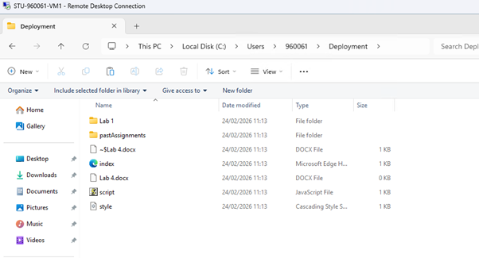
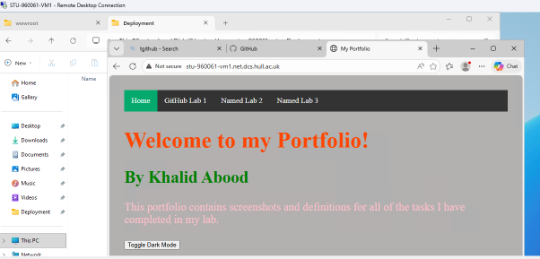
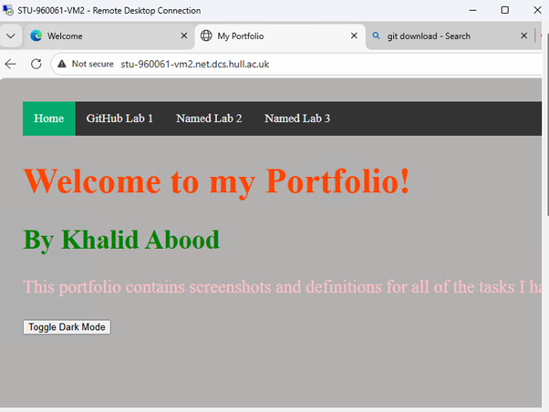
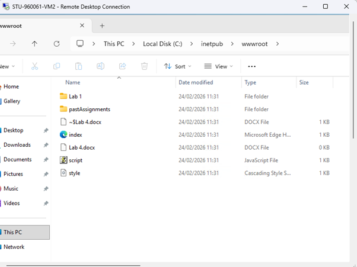
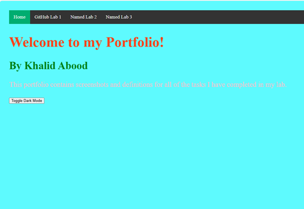
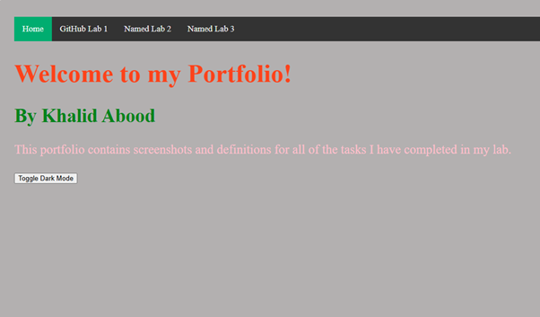

I connected to VM-1 using Remote Desktop Protocol (RDP). I then cloned my portfolio repository from GitHub into a folder onto the VM using the git clone command. Successfully downloaded all portfolio files to the VM.


I moved these files to the "wwwroot" folder. This will automatically pick up my index.html file as the main file in my website.

After, I opened up VM-2 and redid all the prior steps inside that VM.


I changed the background color from grey to cyan. The first screenshot is the development VM and the second screenshot is the deployment. These VMs are useful as they allow developers to test changes before releasing them onto the real version, or in this case, the deployment VM.